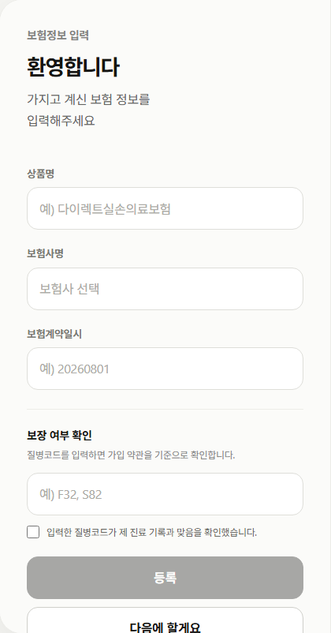
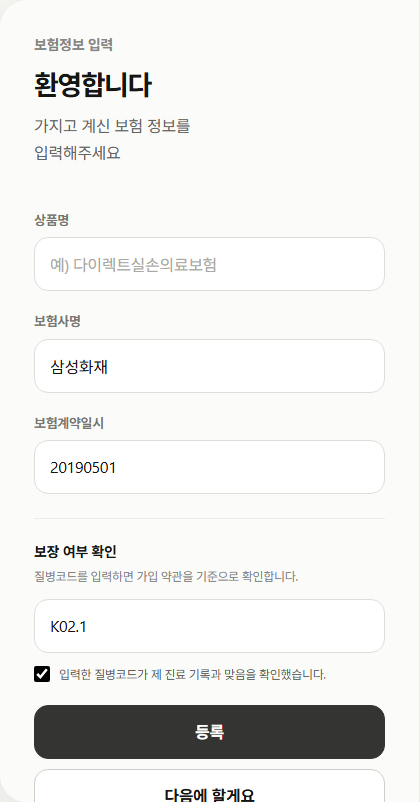
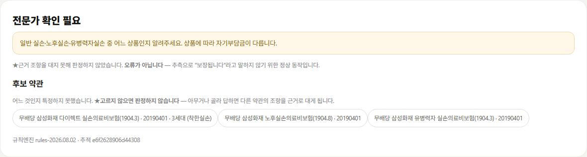
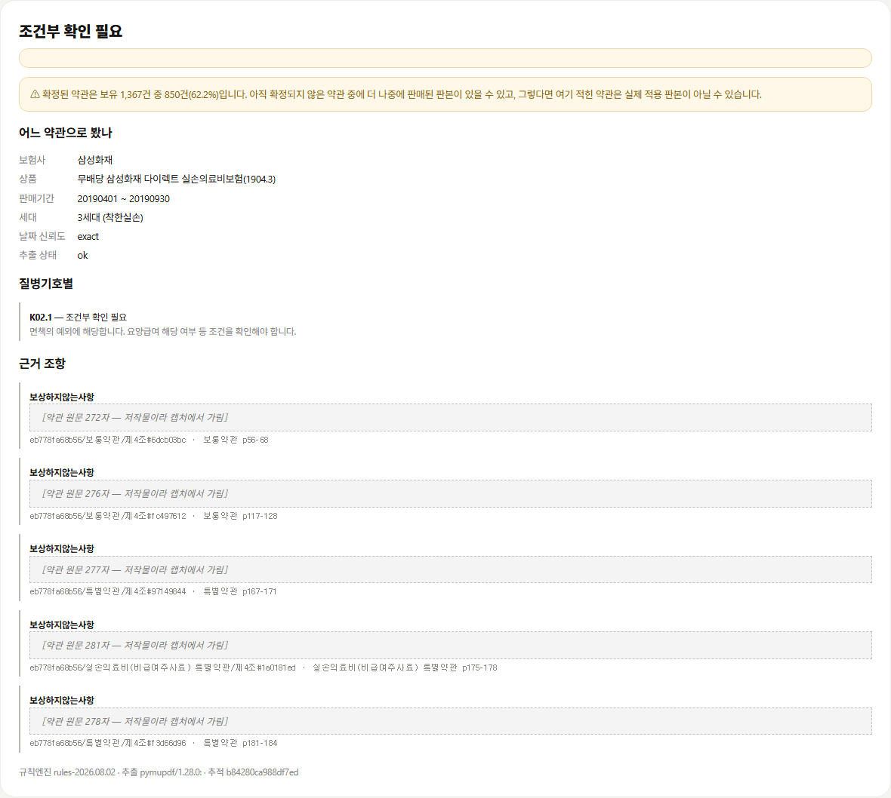
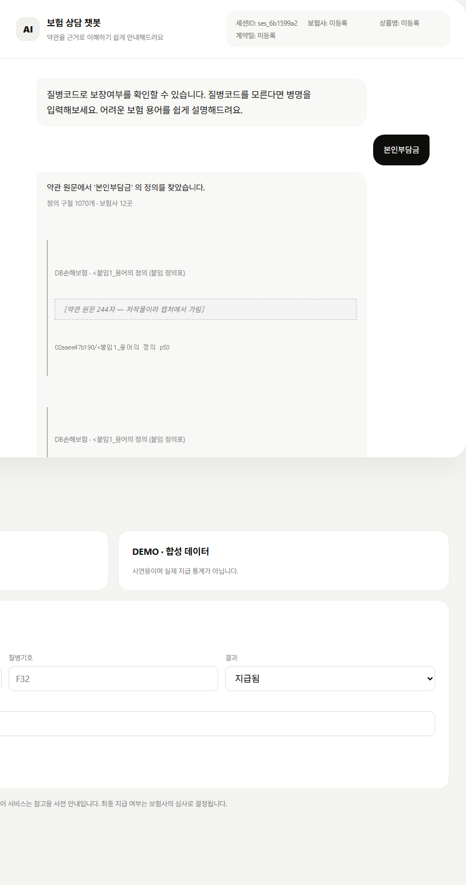
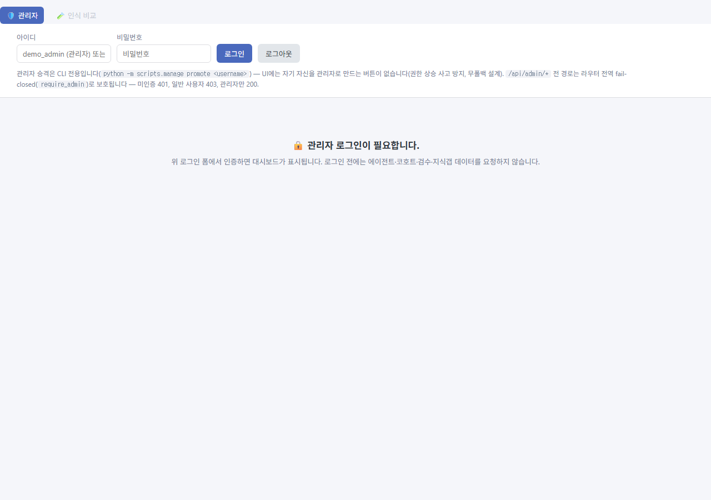

화면이 실제로 무엇을 하는지 — 눌러서 찍은 것만 싣습니다.
캡처 2026-08-04 · 고객 :8080 · 운영 :8081
data/extracted/·data/structured/ 를 커밋에서 막아 두었는데,
docs/ 는 .gitignore 가 막지 않습니다. 그래서 찍는 단계에서 가립니다.
가린 것은 인용 본문뿐이고 조항 ID·약관명·페이지는 그대로 둡니다 —
인용이 동작한다는 증거는 거기에 있습니다.
| 보험사 | 삼성화재 |
|---|---|
| 가입일 | 20190501 (형식은 YYYYMMDD) |
| 질병기호 | K02.1 치아우식증 — 상아질에 생긴 것 |
재현: POST /v1/prechecks ·
규칙엔진 rules-2026.08.02 · 추출 pymupdf/1.28.0

product_name 이 실립니다.

같은 시점에 상품이 셋이라 판정을 거부했습니다
(ambiguous_product_line · verdict=needs_expert).
화면 문구 그대로:

exact · 추출 상태 ok.exception_applies) —
K02.1 이 치과치료 K00~K08 면책에 걸리되, 요양급여 해당 여부라는 조건이 남습니다.
「안 됩니다」로 단정하지 않습니다.eb778fa68b56/보통약관/제4조#6dcb03bc · p56–68 등).회색 점선 상자가 가려진 약관 원문입니다. 글자 수만 남겼습니다.


/static/admin.html·/api/admin/report 모두 404.
운영 앱에서는 /api/admin/report 가 401(로그인 필요) —
fail-closed 입니다.python -m scripts.manage promote <사용자명>).
화면에 자기 자신을 관리자로 만드는 버튼이 없습니다.M51.2(현대해상)·J20.9(흥국화재)는
근거를 못 찾아 기권했습니다(no_evidence) — 면책 조항에 없다는 뜻이지
보장된다는 뜻이 아닙니다.config/precheck_mode.json → human_signoff)로 바꾸면
판정 가능 약관은 0건이 됩니다.두 서버를 띄운 뒤 캡처 스크립트를 돌립니다. 원문 가림은 스크립트 안에 들어 있습니다.
python -m scripts.run_customer_server # :8080
python -m scripts.run_admin_server # :8081
python scripts/capture_storyboard.py docs/delivery/screenshots